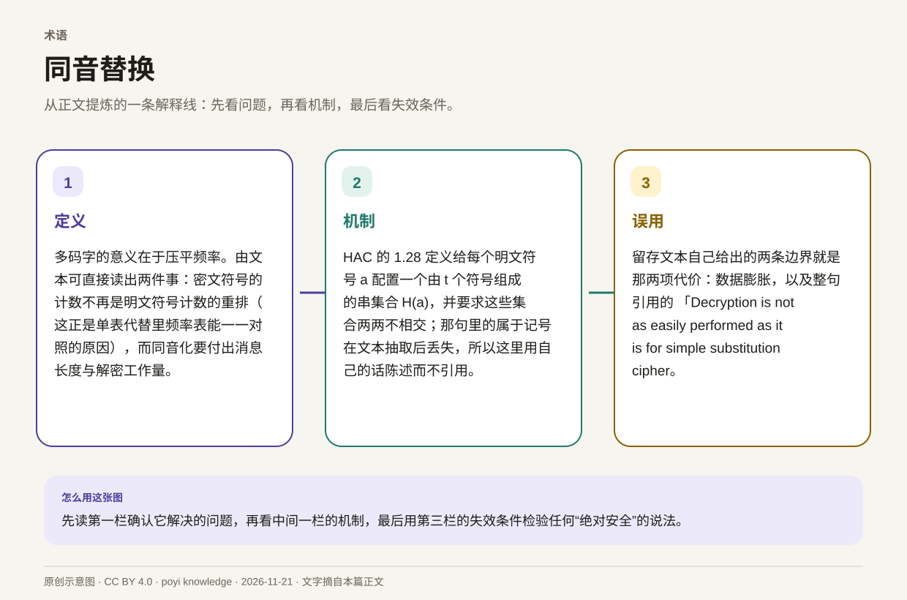

原理与机制
术语：同音替换（Homophonic Substitution）。HAC 的 1.28 定义给每个明文符号 a 配置一个由 t 个符号组成的串集合 H(a)，并要求这些集合两两不相交；那句里的属于记号在文本抽取后丢失，所以这里用自己的话陈述而不引用。加密过程印在 hac1.txt:530，原文是 「A homophonic substitution cipher replaces each symbol a in a plaintext message block with a randomly chosen string from H(a).」（把明文块中的每个符号 a 替换为从 H(a) 中随机选取的一个串）；同一行结尾还有 「The key for the cipher consists of the sets H(a).」（该密码的密钥就是这些 H(a) 集合）。因此需要保密的对象是整套码字集合，而加密是在 H(a) 里随机挑一个，不是固定映射到一个像。

为什么重要
多码字的意义在于压平频率。hac1.txt:540 把机制和代价写在一处：「A homophonic cipher can be used to make the frequency of occurrence of ciphertext symbols more uniform, at the expense of data expansion.」（同音密码可使密文符号的出现频率更均匀，代价是数据膨胀），紧接着同一行说 「Decryption is not as easily performed as it is for simple substitution ciphers.」（解密不如单表代替那样容易）。由文本可直接读出两件事：密文符号的计数不再是明文符号计数的重排（这正是单表代替里频率表能一一对照的原因），而同音化要付出消息长度与解密工作量。
应用与实例
HAC 把同音替换放在第 1 章的对称密钥加密综述里：本章在 hac1.txt:529 给它单独设了小标题，紧接在贯穿 hac1.txt:528 的单表代替材料之后，两行之后的例 1.29 就是随后用来推理的具体实例。文中的一个实例小到能手算，原文为 「Consider A = {a, b}, H(a) = {00, 10}, and H(b) = {01, 11}.The plaintext message block ab encrypts to one of the following: 0001, 0011, 1001, 1011.」（设 A={a,b}，H(a)={00,10}，H(b)={01,11}，明文块 ab 加密为 0001、0011、1001、1011 之一）。hac1.txt:532 列出 aa、ab、ba、bb 四个互不相交的集合，hac1.txt:533 给出这一构造想要的结论：「Any 4-bitstring uniquely identifies a codomain element, and hence a plaintext message.」（任一 4 位串都能唯一确定一个值域元素，从而唯一确定一条明文）。该条目只陈述这一教学位置；该留存件没有给出部署史，本文不作部署史断言。
边界与攻击面
留存文本自己给出的两条边界就是那两项代价：数据膨胀，以及整句引用的 「Decryption is not as easily performed as it is for simple substitution ciphers.」（解密不如单表代替那样容易）（hac1.txt:540）。解密必须判断收到的串属于哪个 H(a)，这就是 1.28 里两两不相交条件承重的地方——集合一旦重叠，密文串就会出现歧义。除此之外，该条目沿用章内对密钥空间规模的告诫，不自造强度结论。hac1.txt:709 的 Fact 1.40 原文是 「A necessary, but usually not sufficient, condition for an encryption scheme to be secure is that the key space be large enough to preclude exhaustive search.」（加密方案要安全的一个必要但通常不充分的条件，是密钥空间大到无法穷举）。因此一张很大的 H(a) 表并不构成安全性证据；该留存件没有给出这一构造的攻击复杂度，本文也不给出。
历史与背景
能从留存件本身定年的只有这份文献，而且这里有一处值得记录的矛盾。第 1 行印着 「This is a Chapter from the Handbook of Applied Cryptography, by A.Menezes, P.van Oorschot, and S.Vanstone, CRC Press, 1996.」（本件取自应用密码学手册第 1 章，作者 A.Menezes、P.van Oorschot、S.Vanstone，CRC Press，1996 年），而第 6 行的版权行首符号被抽取成裸字母 c、年份写作 1997。两处都按行号引用，不合并成一个统一的年份，因为第二行的首字形已损坏，而且两行本身并不同意。同音构造在本章出现在第 529 行之后的古典代替材料中；本章的注释与进一步参考一节（1.14，小标题在 hac1.txt:1618）在 hac1.txt:1636 说明对称密钥加密有很长的历史、由 Kahn 记载，并把 Denning 第 2 章列为进一步的来源；那条注释没有给出同音构造的提出者或年代，本留存件其它行同样没有，因此该条目不谈发明者。
逐步示例与核验
定义检查模型
上位概念 → 区别特征 → 正例 → 反例 → 易混边界。正例必须落在外延内；反例必须刚好跨过边界；同义词不能代替定义。
参考出处
- Wikipedia search entry for 同音替换. https://zh.wikipedia.org/w/index.php?search=%E5%90%8C%E9%9F%B3%E6%9B%BF%E6%8D%A2
- RFC 4949: Internet Security Glossary, Version 2. https://www.rfc-editor.org/rfc/rfc4949